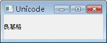

在 簡 單的顯示中文（使用 Unicode 轉換） 中， 介紹過簡單的中文顯示，在Qt中，使用QString來儲存字串，QString中的每個字元則是QChar的實例，QChar使用Unicode來儲 存，Unicode包括了ASCII及ISO 8859-1（Latin-1），您可以直接指定Unicode編碼來指定要儲存的字元，例如：
- main.cpp
#include <QApplication>
#include <QLabel>
#include <QTextCodec>
int main(int argc, char *argv[]) {
QApplication app(argc, argv);
QString text;
text[0] = QChar(0x826F); // 良
text[1] = QChar(0x845B); // 葛
text[2] = QChar(0x683C); // 格
QLabel *label = new QLabel;
label->setText(text);
label->setWindowTitle("Unicode");
label->resize(200, 50);
label->show();
return app.exec();
}程式中使用Unicode編碼來指定QChar的字元，並設定為QString的元素，程式的執行結果將如下：

若想要得知QChar的Unicode字元之編碼，可以使用QChar的unicode()方法，如果QChar實際是在ASCII子集中，則可以使用 isSpace()、isDigital()、isSymbol()、isUpper()、isLower()等方法來判斷字元是否為空白、數字、符號、 大寫、小寫等。
在 簡 單的顯示中文（使用 Unicode 轉換） 中，使用了QTextCodec 來進行 C/C++ 的字元編碼轉換為Unicode的動作，最基本的作法即是以codecForName()取得QTextCode實例，再使用該實例的toUnicode()進行轉換：
QTextCodec *codec = QTextCodec::codecForName("Big5-ETen");
...
label->setWindowTitle(codec->toUnicode("良葛格"));
...
label->setWindowTitle(codec->toUnicode("良葛格"));
另一種方式，則是使用tr()方法，tr()是QObject上所定義的靜態方法，並在事先設置QTextCodec::setCodecForTr()為想要的QTextCodec編碼實例，例如：
- main.cpp
#include <QApplication>
#include <QLabel>
#include <QTextCodec>
int main(int argc, char *argv[]) {
QApplication app(argc, argv);
QTextCodec::setCodecForTr(
QTextCodec::codecForName("Big5-ETen"));
QLabel *label = new QLabel;
label->setText(
QObject::tr("<center><h1>Qt4 學習筆記</h1></center>"));
label->setWindowTitle(
QObject::tr("良葛格"));
label->resize(200, 50);
label->show();
return app.exec();
}執行結果與 簡 單的顯示中文（使用 Unicode 轉換） 是一樣的，您也可以用更簡單的方法，使用QTextCodec::setCodecForCStrings()，直接設定C/C++的字元與QChar的轉換，這在程式撰寫上會更簡潔一些，例如：
- main.cpp
#include <QApplication>
#include <QLabel>
#include <QTextCodec>
int main(int argc, char *argv[]) {
QApplication app(argc, argv);
QTextCodec::setCodecForCStrings(
QTextCodec::codecForName("Big5-ETen"));
QLabel *label = new QLabel;
label->setText("<center><h1>Qt4 學習筆記</h1></center>");
label->setWindowTitle("良葛格");
label->resize(200, 50);
label->show();
return app.exec();
}